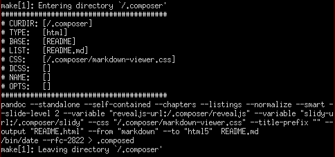

Composer CMS
“Creating Made Simple.”
Contents
Introduction
Overview
Composer is a simple but powerful CMS based on Pandoc and Make.
By default, input files are written in a variation of Markdown.
Traditionally, CMS stands for Content Management System. In the case of
Composer, however, CMS really means a Content Make System. For
many types of content, maybe even most, simpler is better. Content is
very easy to manage when it lives its full life-cycle as plain text,
since there are a veritable multitude of solutions available for
tracking and managing text and source files. What is really needed is
a basic system with advanced capabilities for “making” these simple text
files into richer, more capable document types.
This is the goal of Composer.

Quick Start
Composer is completely self-documenting. To get the full usage and
help output:
make help
To download/update some necessary 3rd party components:
make update
To build an example/test directory using all features:
make test
In the simplest case, Composer can be used to make the conversion of
Markdown files to other formats a trivial task. The real strength and
goal of Composer, however, is as a recursive build system for any type
of output content (websites, manuals/documentation, etc.).
The Readme and License also serve as example source files.
Goals
Composer is really nothing more than a Make-based wrapper to
Pandoc. The author started out with the following requirements for an
all-purpose documentation production system:
- Minimal dependencies, and entirely command-line driven.
- All source files in plain-text, and readable/usable as stand-alone
documents, which means no inline syntax/formatting that is
aesthetically displeasing or difficult to integrate/camouflage. - Clear isolation of content from formatting, so writing and
editing/publishing tasks can be performed independently. - Relatively basic command-line syntax for producing “ad hoc”
documents, regardless of the complexity of the source/output. - Scalable and recursive, so whole directories of information can be
managed easily, with websites and large documents (books, manuals,
etc.) being primary in mind. - Support for dependencies and inheritance, with global, per-tree,
per-directory and per-file overrides. - Workflow agnostic, so it can be used by semi-technical team
members in a corporate environment. - Professional output, suitable for business environments or
publication.
While support for a multitude of output formats was desired, the
following were absolute necessities:
- HTML
- Presentation / Slideshow
- DocX (completely negotiable, but valuable)
- ePUB (somewhat negotiable, but highly desired)
A thorough review and test of the large number of available input
formats and formatting engines resulted in a very short list of projects
which could support the above requirements. Pandoc was selected for
a number of reasons:
- Markdown is an increasingly universal/portable and popular
plain-text format. - Required formats worked “out of the box”, and intermediary formats
like LaTeX were almost completely abstracted. - Did not require any expertise with output or intermediary formats to
accomplish advanced results/output. - Supported a large number of input and output formats, and was
designed very intelligently to allow translation from any supported
input format to any supported output format. - Internally, normalizes documents into a single data structure which
can be manipulated or modified. - If necessary, all templates could be modified and the internal
conversion could be scripted at a very deep level.
Pandoc provided the perfect engine, but running long strings of
commands was not feasible for quick and simple command-line use, and the
thought of writing new scripting/automation each time a large-scale
project emerged was not terribly exciting. Thus, Make was selected as
a wrapping engine based on it’s years of history as one of the most
popular and highly used source file processing systems in use.
The final result is Composer, which leverages these two tools to
accomplish the original goals with a minimum amount of user knowledge
and expertise, and to provide a solid foundation for simplified
management of larger content production efforts.
Details
Compatibility
Composer is developed and tested on a Funtoo/Gentoo GNU/Linux
system. An effort has been made to do things in a portable way, but
cross-platform development is not an area of expertise for the author.
Output of make --version on development system:
1 | GNU Make 3.82 |
Output of pandoc --version on development system:
1 | pandoc 1.12.3.3 |
If you discover issues, please contact the author directly, with advance
thanks. It is highly desirable for Composer to be as “run anywhere”
as possible.
Running the commands in the Quick Start section will help you validate
whether your system will work as expected. In particular, the make
test command validates the proper functioning of all the supported
features and uses of Composer.
Versioning
Composer is not really revisioned into “releases” outside of the
source code repository. Each commit is tested using make test first,
so the latest source should always be ready for production.
If you require greater assurance of stability, use a version of the
source that is tagged with a version number.
Dependencies
Composer was designed to have a minimum of external dependencies:
- Pandoc
- Also need some version of LaTeX installed
- Make
- GNU version is highly recommended (other versions may not work)
- Coreutils
- GNU version is highly recommended (other versions may not work)
In order to download/update the 3rd party components, such as style
sheets and formatters, these are also needed:
Components from these 3rd party projects are used:
- Markdown Viewer
- Simple and elegant CSS for HTML files
- Reveal.js
- Beautifully slick HTML presentation framework
- W3C Slidy2
- Essentially the grandfather of HTML presentation systems
Basically, any GNU-based system, such as GNU/Linux, Cygwin or
FreeBSD (with the GNU tools installed), should work just fine. The
biggest external dependency is Pandoc itself and the LaTeX system it
uses to produce some of the output formats (namely PDF).
Officially, Composer is tested on GNU/Linux, Mac OS X and Windows (using
the included MSYS2 tools).
Caveats
There are a couple important items to be aware of when using Composer:
- Portability
- Running it on non-Linux systems or with different versions of
Make (see Compatibility) may not produce expected results. - Portability is a goal of the project, and it is written with
standards compliance in mind, but it may very well depend
specifically on the GNU version of Make despite this. - An effort has been made to anticipate file names with spaces or
other special characters, but horribly named files may produce
equally horrible results (this is generally the case with any
file-based automation). - The “automagic” target detection uses a simple regular
expression and is very basic.
- Running it on non-Linux systems or with different versions of
- Recursion
- While it simplifies things quite a bit, it does not completely
hide away the complexities of using Make recursively. - Recursion handling and the
$(COMPOSER_ABSPATH)variable may be
overly-clever and therefore not portable. - By default, recursion into sub-directories occurs after the
current directory targets are run, which makes the output much
more readable but precludes dependencies between parent
directories and their children.- This behavior can be toggled globally or per-directory using
the$(COMPOSER_DEPENDS)variable as documented.
- This behavior can be toggled globally or per-directory using
- There are some who have made good arguments that systems other
than Make should be used for recursion. This author concedes
some of their points, but has chosen to ignore them and use the
most widely deployed and used Make system available.
- While it simplifies things quite a bit, it does not completely
- Variables
- This system gives precedence to environment variables at the top
level and in all the examples, which is key to making the
inheritance behavior work.- If you wish to be insulated from this, you can make all the
option variable definitions in children Make files explicit
(useoverride OPTS :=instead ofoverride OPTS ?=) and
place them below the upstreamincludestatements. - The side effect of this will be that each directory will need
to define it’s own behavior (i.e. no inheritance). - This solution is documented in
make help, is tested and
supported, and does not require any modifications to the main
Make file.
- If you wish to be insulated from this, you can make all the
- Similarly to the above, the
exportcommand should not be used in
any Make files read by Composer, other than the provided
examples inmake helpwhich have been tested.
- This system gives precedence to environment variables at the top
- Output
- The
make helpoutput could be much more kind to those not
working on huge terminal windows.
- The
Finally, it could be that Composer introduces more complexity than it
does add value, which this author guesses is likely true for many.
The author encourages the reader to review the Goals section and
decide for themselves if Composer will be beneficial for their needs.